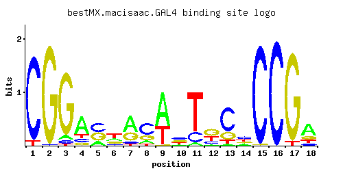

GAL4
YPL248C, GAL81
DNA-binding transcription factor required for the activation of the GAL genes in response to galactose; repressed by Gal80p and activated by Gal3p
Best-performing DNA-binding model.

View and copy the recommended matrices ↘
A | 0.001 0.001 0.056 0.642 0.185 0.199 0.574 0.142 0.640 0.116 0.058 0.060 0.030 0.186 0.001 0.001 0.001 0.572 C | 0.941 0.015 0.044 0.126 0.427 0.142 0.071 0.569 0.001 0.367 0.196 0.181 0.670 0.426 0.983 0.997 0.001 0.095 G | 0.001 0.983 0.885 0.101 0.373 0.186 0.299 0.218 0.015 0.316 0.001 0.472 0.210 0.187 0.015 0.001 0.956 0.178 T | 0.057 0.001 0.015 0.131 0.015 0.472 0.056 0.071 0.344 0.201 0.746 0.287 0.090 0.201 0.001 0.001 0.042 0.155
A | 0 0 5 64 18 19 57 14 64 11 5 6 3 18 0 0 0 57 C | 94 1 4 12 42 14 7 56 0 36 19 18 67 42 98 99 0 9 G | 0 98 88 10 37 18 29 21 1 31 0 47 21 18 1 0 95 17 T | 5 0 1 13 1 47 5 7 34 20 74 28 9 20 0 0 4 15
A | -5.77 -5.77 -1.74 0.70 -0.55 -0.48 0.58 -0.81 0.69 -1.01 -1.71 -1.67 -2.37 -0.54 -5.77 -5.77 -5.77 0.58 C | 1.65 -2.48 -1.41 -0.36 0.86 -0.24 -0.93 1.15 -5.19 0.71 0.09 0.01 1.31 0.86 1.70 1.71 -5.19 -0.64 G | -5.19 1.70 1.59 -0.58 0.73 0.03 0.51 0.19 -2.48 0.56 -5.19 0.96 0.15 0.04 -2.48 -5.19 1.67 -0.01 T | -1.73 -5.77 -3.06 -0.89 -3.06 0.39 -1.74 -1.51 0.07 -0.47 0.85 -0.11 -1.27 -0.47 -5.77 -5.77 -2.03 -0.72
Alternative candidate matrices 12
Historical matrix candidates from the original ScerTF database. Expand a source to inspect its original logo, scores, and matrix values.
GAL4_AFoat et. al.P = 1.75e-05View matrix ↘
GAL4_BFoat et. al.P = 1View matrix ↘
GAL4_CFoat et. al.P = 0.006809View matrix ↘
GAL4_DFoat et. al.P = 4.74e-06View matrix ↘
GAL4_EFoat et. al.P = 0.0002873View matrix ↘
GAL4_FFoat et. al.P = 0.0009011View matrix ↘
GAL4Harbison et. al.P = 6.89e-26View matrix ↘
GAL4Morozov et. al.P = 2.64e-19View matrix ↘
GAL4Pachkov et alP = 1.65e-23View matrix ↘
GAL4Zhu J and MQ ZhangP = 5.71e-21View matrix ↘
GAL4Zhu et. al.P = 2.13e-13View matrix ↘
GAL4Zhao and StormoP = 0.002085View matrix ↘
Gene-level annotations and interactions.
Genes bound in ChIP-chip experiments 68 genes
YAL030W, YAL031C, YAL062W, YBL059W, YBL109W, YBL111C, YBL112C, YBL113C, YBR018C, YBR019C, YBR020W, YBR057C, YBR086C, YBR087W, YBR102C, YBR103W, YBR166C, YCR105W, YDL206W, YDL237W, YDL238C, YDR008C, YDR009W, YDR212W, YDR245W, YDR252W, YDR415C, YDR416W, YDR520C, YDR543C, YDR544C, YDR545W, YER189W, YER190W, YFR057W, YGL134W, YGR073C, YGR075C, YGR166W, YGR296W, YHR091C, YIL085C, YIL086C, YIL087C, YJR044C, YLL065W, YLR081W, YLR082C, YLR397C, YLR442C, YLR443W, YML051W, YMR086C-A, YMR087W, YMR135W-A, YMR257C, YMR259C, YNL337W, YNL338W, YNL339C, YOL042W, YOL043C, YOR030W, YOR350C, YPL034W, YPL122C, YPL251W, YPL253C
Genes affected by TF deletion 580 genes
YCR012W, YCR040W, YDR366C, YER178W, YGR280C, YGR282C, YIL148W, YJR020W, YKR012C, YMR010W, YML116W, YMR014W, YMR046W-A, YOR225W, YOR257W, YPL239W, YKL122C, YBR187W, YBR221C, YBR162C, YDL064W, YDL128W, YDL131W, YDR188W, YDR192C, YEL042W, YEL046C, YFR032C-A, YGL009C, YGR121C, YGR124W, YHR143W, YHR174W, YHR115C, YLR025W, YLR056W, YLR027C, YLR058C, YLR060W, YLR062C, YLR432W, YLR406C, YMR194W, YNL239W, YNL209W, YNL211C, YNL277W, YOR002W, YOR067C, YOR008C, YOR071C, YPL015C, YPL049C, YBL083C, YBR001C, YBR031W, YBL087C, YCR013C, YDR034C-A, YDR063W, YDR397C, YER117W, YER146W, YGR275W, YGR279C, YIL113W, YKR042W, YKR013W, YMR011W, YML115C, YMR015C, YNL049C, YNL080C, YOR190W, YOR252W, YOR192C, YOR226C, YPL179W, YCR097W-A, YAL069W, YBR220C, YBR222C, YDL061C, YDR187C, YGL012W, YGR122C-A, YGR155W, YGR096W, YHR112C, YHR142W, YHR143W-A, YHR145C, YJL118W, YLR089C, YLR028C, YLR030W, YLR061W, YMR221C, YMR193C-A, YNL244C, YOR066W, YPL048W, YOR380W, YOR382W, YCR082W, YDR096W, YDR158W, YDR160W, YDR529C, YDR500C, YFR005C, YGR063C, YHR081W, YHR053C, YHR025W, YHR055C, YIR034C, YJR143C, YJR116W, YLR340W, YLR372W, YLR374C, YMR071C, YNL147W, YNL149C, YOL136C, YOR285W, YOR287C, YOR317W, YOR321W, YOR351C, YPR020W, YPL006W, YPL036W, YPL187W, YAR064W, YAR068W, YBL059W, YBR283C, YBR253W, YCL017C, YER086W, YGL103W, YGL077C, YGR180C, YHR208W, YIL016W, YHR210C, YIL052C, YML023C, YML056C, YML085C, YML029W, YMR312W, YMR286W, YMR256C, YNR026C, YNR030W, YNL307C, YNR032C-A, YPL142C, YPL080C, YHR183W, YBR067C, YDR461W, YFR006W, YGR034W, YGR064W, YHR021C, YJL017W, YJR146W, YJR117W, YKR106W, YLR339C, YMR074C, YNL110C, YNL176C, YNL114C, YNL146W, YNL116W, YOL105C, YOL137W, YOL077W-A, YOL109W, YPR013C, YPL271W, YNL251C, YNL287W, YBL026W, YCL018W, YDL191W, YDR309C, YDR338C, YDR340W, YDR281C, YER052C, YER025W, YER056C, YGL102C, YGR181W, YGR185C, YIL015W, YJL178C, YLR153C, YLR185W, YML024W, YML055W, YML084W, YML026C, YML086C, YNL302C, YPL143W, YPL145C, YCR048W, YDR012W, YDR378C, YIL088C, YIL090W, YJR094W-A, YLR286C, YLR287C-A, YML123C, YNL030W, YOL019W, YOR265W, YPL247C, YDL133C-A, YDL136W, YDR196C, YDR224C, YER002W, YFR044C, YHR123W, YHR188C, YJL121C, YJL093C, YKL053C-A, YLR066W, YLR068W, YLR439W, YMR230W, YNL279W, YNL219C, YNL283C, YOR045W, YBR009C, YCR018C-A, YDR071C, YDR077W, YDR373W, YER154W, YGR285C, YIL153W, YIL123W, YJR057W, YKR048C, YNL055C, YNL057W, YOL020W, YOL052C, YOR260W, YOR234C, YPL184C, YPL248C, YJR148W, YAL010C, YAL012W, YAL042W, YAL043C-A, YAL016W, YBR162W-A, YBR196C, YDL075W, YDR261C, YKL081W, YLR034C, YLR037C, YMR171C, YOR014W, YOR078W, YOR390W, YPL028W, YDR502C, YGR037C, YLL009C, YLR344W, YLR378C, YMR139W, YOL144W, YOL086C, YOR293W, YOR325W, YOR327C, YOR357C, YOR329C, YPR054W, YBL003C, YBR265W, YDL232W, YDR349C, YGR254W, YHR214W, YJL159W, YKL209C, YKL178C, YMR260C, YMR296C, YNR037C, YPL092W, YJL062W, YCR088W, YDR105C, YDR139C, YDR471W, YFL017W-A, YGR036C, YHR032W, YJR121W, YLL010C, YLR343W, YLR379W, YMR079W, YMR081C, YMR112C, YMR083W, YNL150W, YNL152W, YOL143C, YOR324C, YPL279C, YLL023C, YNR043W, YBL028C, YBL030C, YBL032W, YBR262C, YGR189C, YHR214W-A, YHR216W, YIL027C, YJL188C, YJL158C, YJL190C, YKL175W, YKL146W, YKL177W, YLR133W, YMR323W, YER060W, YCR023C, YCR059C, YDR086C, YDR450W, YER131W, YGL189C, YHR010W, YHL032C, YIL162W, YKR057W, YKR093W, YLR262C-A, YLR234W, YLR264W, YMR055C, YNL038W, YOR239W, YPL221W, YPL225W, YPL256C, YIL114C, YBR171W, YDR232W, YDR234W, YEL058W, YHR190W, YLR040C, YLR104W, YLR420W, YNL259C, YOR081C, YOR085W, YPL031C, YPL066W, YPL037C, YDL058W, YCR053W, YDR447C, YGL245W, YHR005C-A, YHL001W, YIL127C, YLR292C, YML126C, YNL094W, YNL066W, YOL030W, YOL061W, YOR210W, YAL022C, YDL081C, YGL056C, YGL028C, YHR189W, YKL057C, YKL120W, YLR041W, YLR043C, YML009C, YMR203W, YMR205C, YMR237W, YNL288W, YOR018W, YOR020C, YOR084W, YPL032C, YPL063W, YBR084C-A, YCR097W, YDR179C, YDR510W, YFL026W, YHR072W-A, YJR159W, YKL003C, YLR354C, YLR388W, YOL092W, YOL122C, YPR062W, YDL208W, YDR322C-A, YDR357C, YER043C, YGL087C, YGL089C, YGR260W, YGR234W, YIL006W, YIL036W, YML070W, YMR272C, YNL321W, YPL162C, YCR090C, YDL045W-A, YDR115W, YFL023W, YIR016W, YJR131W, YLL018C, YLR325C, YMR116C, YMR088C, YNL190W, YNL162W, YOL119C, YOR299W, YPL281C, YPR002C-A, YGR259C, YJR004C, YKL216W, YKL156W, YLR167W, YMR303C, YNR042W, YNR044W, YNL322C, YDR056C, YDR090C, YDR454C, YDR396W, YGL191W, YGL225W, YIL138C, YLR303W, YMR006C, YMR039C, YOR277C, YOR247W, YPL262W, YAL033W, YBR243C, YBR249C, YER019C-A, YGL031C, YGR148C, YHR136C, YHR141C, YJL079C, YML019W, YMR245W, YMR188C, YNL263C, YPL076W, YER012W, YCR028C-A, YGL255W, YHL003C, YHR019C, YIL169C, YJR077C, YKR094C, YLR237W, YLR300W, YLR302C, YNL070W, YNL074C, YNL045W, YOR246C, YOR248W, YAL030W, YBR244W, YDL121C, YGL032C, YGR118W, YJL136C, YKL069W, YLR051C, YLR083C, YLR421C, YMR215W, YNL268W, YBR090C, YDL029W, YFL034C-A, YFL037W, YGR085C, YGR027C, YJR135W-A, YKL006W, YKL008C, YLR328W, YLR394W, YLR332W, YLR334C, YMR158C-B, YOR307C, YOR369C, YPR074C, YPR044C, YBL082C, YCL007C, YCL009C, YDL184C, YIL008W, YKL164C, YKL196C, YLR180W, YLR212C, YML108W, YML052W, YMR305C, YNR055C, YPL170W, YKL004W, YKL006C-A, YLR022C, YLR390W-A, YLR331C, YLR333C, YOL127W, YOL159C, YOL103W, YOR306C, YPR043W, YBL018C, YDR365C, YER048W-A, YGR209C, YKL160W, YKL163W, YLR147C, YLR177W, YML077W, YML081C-A, YMR307W, YOR182C, YPL139C
Genes supported by both experiments 2 genes
YAL030W, YBL059W